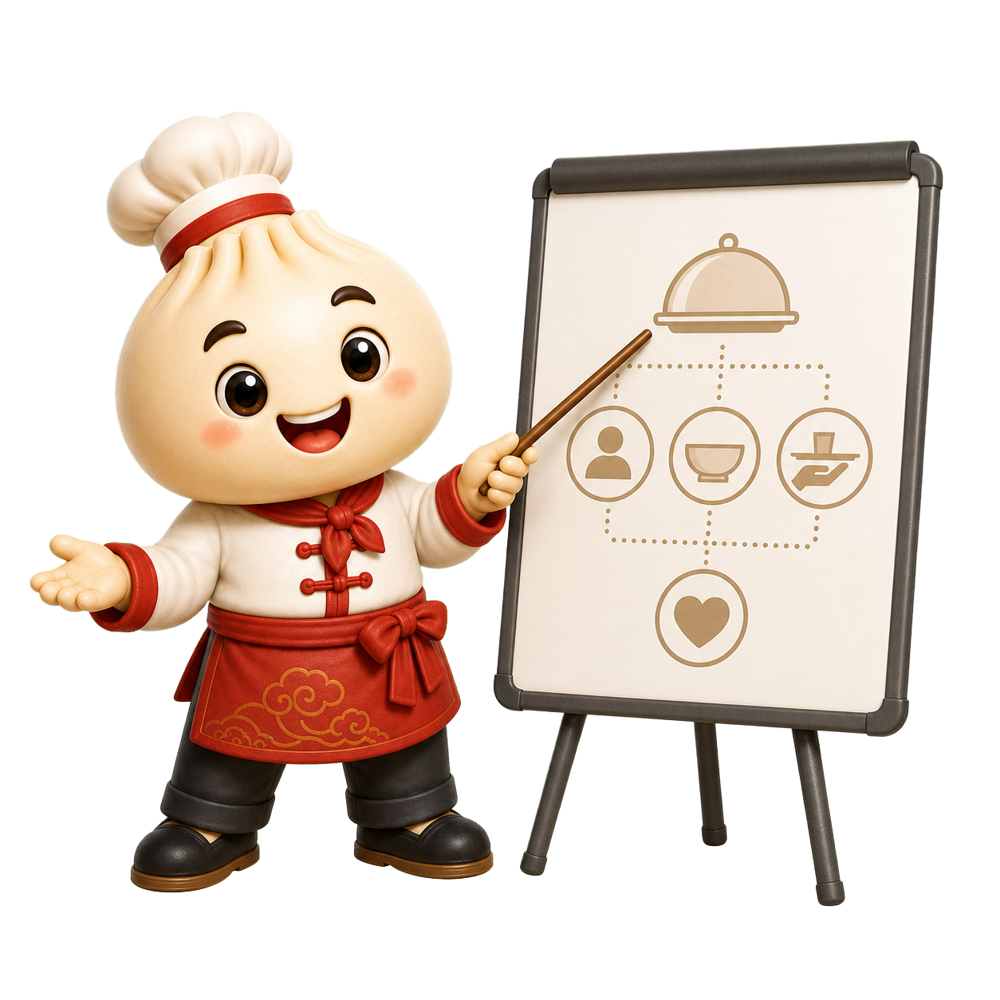

Service Standards
Use Bao to simplify steps for greeting guests, carrying trays, checking orders, and keeping service consistent.
This preview frames Bao around the restaurant's workshop identity: teaching service standards, coaching kitchen timing, showing safe prep, and celebrating trainee progress.
Preview page only. It is not linked from the live navigation.
Bao introduces the flow of service with simple kitchen and dining-room cues.

The mascot works best when he is treated like a helpful coach: warm, clear, food-focused, and tied to real restaurant learning moments.
Use Bao to simplify steps for greeting guests, carrying trays, checking orders, and keeping service consistent.
Show cooking fundamentals, timing, plating, hygiene, and respect for careful preparation.
Let Bao celebrate practice, feedback, and small wins so the workshop mission is visible.
Turn tips into social content: how to order, what to try, how dishes are served, and why training matters.
All 48 transparent PNGs are here: the original campaign/social poses, the training-restaurant teaching poses, and the newest expanded Bao action set.
This section uses the transparent pose set as a lightweight animated concept: Bao starts with instruction, moves into service coaching, and closes by celebrating progress. It gives us a feel for how the mascot can support training storytelling on the site.